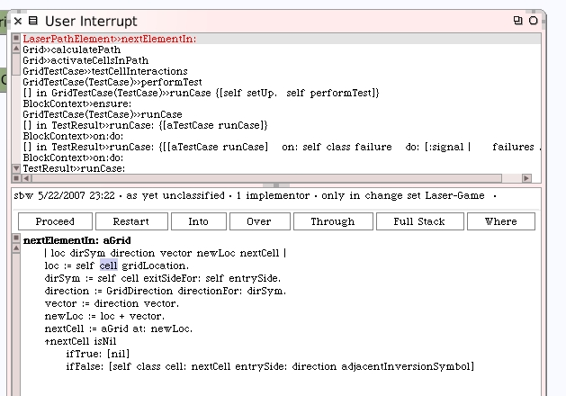
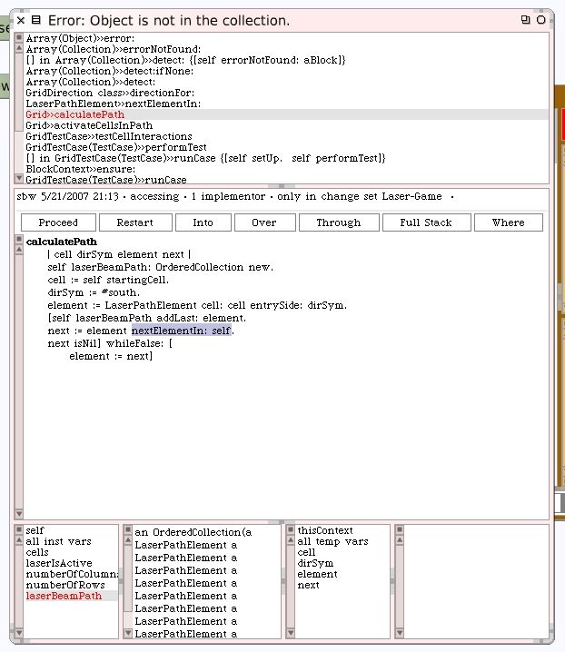

We can apply the new method while stll in the debugger for the #nextElementIn: method.
Click the proceed button on the debugger. Let's rerun our unit tests and see how we are doing now. We still have a problem but at least it's not an endless loop. Click on the debugger once again after selecting the failed method in the test runner.
When we look at the #calculatePath method again, one thing we can see that is different is that the instance variable laserBeamPath appears to have quite a few elements in the collection. That's good. Maybe we're dealing with an error now that is related to how we end the laser path? If we inspect the collection we see there are 9 elements. According to the diagram of how we expect this to work, that would be correct.